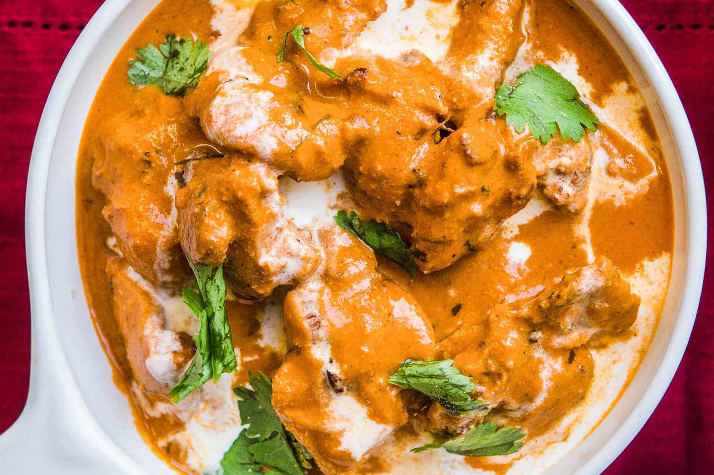

Famous Butter Chicken

Description
These butter chicken breasts are dipped in beaten eggs and cracker crumbs,then baked with butter.
These chicken breasts are really tender and moist with excellent flavor! I never have leftovers.
Ingredients:
- 1 cup crushed buttery round cracker crumbs
- 2 Large Eggs Beaten
- ½ Tablespoon of Garlic Salt
- Ground black pepper to taste
- 4 Skinless, boneless chicken breast in halves
- ½ cup butter, cut into pieces
Steps:
- Preheat the oven to 375 degrees F (190 degrees C).
- Place cracker crumbs and eggs into 2 separate shallow bowls. Mix cracker crumbs with garlic salt and pepper.
- Dip chicken in eggs, then dredge in crumb mixture to coat. Arrange coated chicken in a 9x13-inch baking dish. Scatter butter around chicken.
- Bake in the preheated oven until chicken is no longer pink in the center and the juices run clear, about 40 minutes.
An instant-read thermometer inserted into the center should read at least 165 degrees F (74 degrees C).
- Serve hot and enjoy!